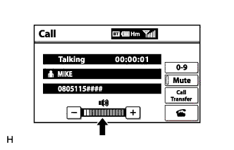
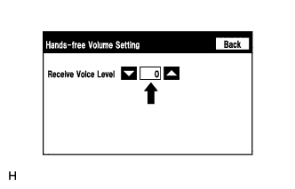

СИСТЕМА НАВИГАЦИИ (для моделей с жестким диском) > Голос другого собеседника не слышен, слишком тихо или много искажений |
| 1.ПРОВЕРЬТЕ МОБИЛЬНЫЙ ТЕЛЕФОН |
Убедитесь в том, что голос собеседника слышен по мобильному телефону.
|
| ||||
| OK | |
| 2.ПРОВЕРЬТЕ СИСТЕМУ НАВИГАЦИИ |
Убедитесь, что передний динамик воспроизводит звуковые сигналы голосового управления.
|
| ||||
| OK | |
| 3.ПРОВЕРЬТЕ НАСТРОЙКИ |
|  |
Проверьте, не установлена ли минимальная громкость на экране "Call" (вызов).
|
| ||||
| OK | |
| 4.ПРОВЕРЬТЕ УСТАНОВКИ (ПРОВЕРКА РАБОТЫ) |
|  |
Выберите "Hands-free Volume Setting" (установки громкости системы громкой связи) (Нажмите здесь).
Проверьте, не установлено ли значение параметра "Receive Voice Level" (уровень громкости голоса собеседника) на "0".
Проверьте, настроен ли параметр "Receive Voice Level" (уровень громкости голоса собеседника) на минимум или максимум.
|
| ||||
| OK | ||
| ||